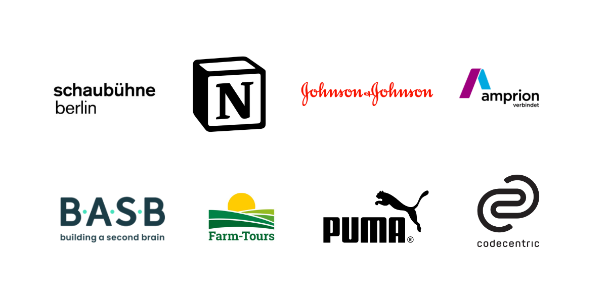

Para organizaciones: ayudo a equipos a desarrollar prácticas de conocimiento sostenibles: formas de capturar, compartir y utilizar lo que aprenden que realmente funcionan en la práctica.
Ponencias y presentaciones: hablo sobre gestión del conocimiento, prácticas de pensamiento y la brecha entre los sistemas y el trabajo real. Hablé más recientemente en el PKM Summit 2026 en Utrecht.
Para personas: trabajo de forma individual o en talleres en grupos pequeños para ayudarte a desarrollar una práctica de conocimiento que se adapte a tu forma de trabajar y pensar.
Una selección de empresas y organizaciones con las que he trabajado:

Contacto: hola@soyguiacarmona.com
Un jardín propio
Instrucciones y compañía para cultivar un jardín digital
En 2020 empecé un blog llamado Un buen plan, donde durante tres años publiqué cada domingo sobre un tema concreto. Lo cerré en 2023, no porque me quedara sin ideas, sino porque el formato se había vuelto una jaula: cada entrada tenía que estar terminada, cerrada, lista, y yo quería explorar cosas que todavía no tenía resueltas, escribir sobre lo que estaba pensando y no solo sobre lo que ya había pensado.
Si me lees desde entonces, 👋 hola, gracias por seguir por aquí.
Después intenté con Substack, pero nunca terminé de encajar con la plataforma. Y cuando descubrí el concepto de jardín digital supe que era la siguiente aventura: un espacio que no me pidiera entradas cerradas ni compromisos semanales, sino que me dejara explorar en proceso y en público al mismo tiempo.
Lo que descubrí es que escribir en público, aunque sea en proceso, cambia cómo piensas. No porque tengas audiencia, sino porque saber que algo puede ser leído te obliga a llevar el pensamiento un paso más allá de donde lo dejarías en privado.
Este curso es la invitación a construir ese espacio. Tuyo, independiente, sostenible.
Qué es un jardín digital
Un jardín digital no es un blog. No necesitas entradas fechadas ni temas resueltos. Es un espacio vivo donde las ideas crecen, se cruzan y cambian de forma con el tiempo. Algunas notas están desarrolladas, otras son solo apuntes. Eso no es un defecto, es la lógica del jardín.
Lo que este curso no es
Este no es un curso de diseño ni de branding. Tu jardín tendrá una tipografía limpia y funcional, y si hace falta te ayudo a elegir algo sencillo que funcione, pero aquí no hacemos moodboards ni definimos paletas de color. Lo que hace que valga la pena un jardín es lo que crece en él.
El setup técnico
En este curso construimos el jardín con GitHub Pages y Claude Code. GitHub Pages es una forma gratuita de publicar tu jardín en internet, en tu propio dominio, sin depender de ninguna plataforma. Claude Code es la herramienta que nos ayuda con la parte técnica: construir y mantener el jardín sin necesidad de saber programar. La escritura es tuya, aunque si en algún momento quieres usar la IA también para eso, nadie te lo impide.
Para usar Claude Code necesitas una suscripción a Claude Pro (20€/mes). Si ya tienes cuenta en Claude, comprueba que tienes el plan Pro activo. GitHub es gratuito y no necesitas ninguna suscripción de pago.
Para publicar el jardín necesitas un dominio propio, que puedes comprar por unos 10-15€/año en cualquier registro de dominios de confianza. Si todavía no tienes uno, no pasa nada: durante el curso puedes publicar directamente en GitHub Pages con una dirección del tipo tunombre.github.io, completamente gratuita, y conectar tu dominio propio cuando quieras.
Puedes ver cómo queda un jardín construido con este sistema en el mío: guia-carmona.com/es/digitalgarden/. Todavía es pequeño, pero está en funcionamiento, y eso es exactamente el punto de partida.
Si ya tienes una página web o prefieres otro sistema, puedes trabajar desde ahí, pero el soporte técnico del curso cubre únicamente GitHub Pages y Claude Code.
Semana a semana
Siete semanas, del 12 de mayo al 27 de junio.
- Semana 1 — Qué es un jardín digital: intenciones, primeras decisiones y primeros pasos técnicos
- Semana 2 — Configuración: tu jardín publicado y funcionando
- Semana 3 — Las primeras notas: cómo escribir para un jardín y soltar las primeras ideas al mundo
- Semana 4 — Estructura y navegación: cómo organizar un jardín que pueda crecer sin volverse un caos
- Semana 5 — Formas de conocer: mapas, cartas y otras maneras de trabajar con el conocimiento
- Semana 6 — Protocolos de memoria y Wissensspeicher: qué guardamos, en qué forma y por qué importa
- Semana 7 — Cierre y cultivo: cómo mantener el jardín vivo mucho más allá del curso
Cómo funciona
Cada semana hay una sesión en vivo de una hora, material escrito o un vídeo corto para trabajar a tu ritmo, y un grupo en Slack donde compartir avances, preguntas y jardines en proceso.
No tienes que estar en todo. Las sesiones se graban. Puedes aparecer con lo que tienes esa semana.
Las sesiones en vivo tienen horarios variados para adaptarse a diferentes rutinas. Los horarios concretos los encontrarás aquí.
Para quién es esto
Para personas con ideas en proceso que quieren un espacio propio donde publicarlas. No necesitas saber programar. Necesitas haber usado alguna herramienta de IA como Claude o ChatGPT, tener ganas de escribir en público, y querer un espacio que sea verdaderamente tuyo.
Quién soy yo
Soy Guía Carmona, traductora y escritora especializada en gestión del conocimiento. Llevo años acompañando a personas y organizaciones a construir prácticas sostenibles para trabajar con ideas. Tengo mi propio jardín digital en guia-carmona.com y sé lo que cuesta mantenerlo vivo, y lo que da cuando funciona.
Preguntas frecuentes
¿Necesito saber programar?
No. Claude Code hace la parte técnica contigo: le describes lo que quieres y te ayuda a construirlo. Si alguna vez has usado Claude o ChatGPT para algo, tienes suficiente base. Lo que sí necesitas es paciencia con la tecnología, porque a veces las cosas no funcionan a la primera y eso también forma parte del proceso.
¿Qué pasa si no puedo asistir a alguna sesión en vivo?
Todas las sesiones se graban y las tendrás disponibles. Puedes seguir el curso a tu ritmo y participar en Slack cuando puedas. Dicho esto, las sesiones en vivo son donde pasan las cosas más interesantes: las preguntas de otras personas, los problemas que no habías anticipado, las conversaciones que no estaban en el programa. Si puedes estar, merece la pena.
¿Cuánto tiempo necesito cada semana?
Entre dos y cuatro horas: la sesión en vivo más el tiempo para trabajar en tu jardín. Algunas semanas serán más intensas que otras, especialmente la segunda, cuando configuramos todo el setup técnico. Si una semana no llegas, no pasa nada. El jardín sigue ahí cuando vuelvas.
¿Qué necesito para empezar?
Un ordenador, una cuenta en GitHub (gratuita), una suscripción a Claude Pro (20€/mes) y ganas de escribir en público. Si todavía no tienes dominio propio, puedes empezar con una dirección gratuita de GitHub Pages y conectar el dominio más adelante.
¿El jardín que cree será mío?
Completamente. Vive en tu propia cuenta de GitHub y en tu propio dominio. No depende de ninguna plataforma, no hay suscripción mensual que mantener, no hay empresa que pueda cerrarte el acceso. Si mañana desaparece cualquier herramienta que hayamos usado para construirlo, el jardín sigue en pie.
¿Qué pasa después del curso?
Te quedas con tu jardín publicado y con una práctica para seguir cultivándolo. Lo más importante que te llevas no es la plataforma, sino el hábito y las herramientas para seguir adelante.
¿Puedo pagar en dos plazos?
Sí. Puedes pagar 297€ de una vez o dos pagos de 150€. Si necesitas otro tipo de acuerdo, escríbeme y lo hablamos.
¿Hay plazas limitadas?
Sí, es un grupo pequeño para que haya acompañamiento real. Cuando se llene, se llena.
¿Para quién no es este curso?
Para quien busca una web profesional impoluta desde el día uno. Para quien quiere resultados sin proceso. Para quien no tiene ningún interés en escribir en público. Si no estás seguro de si es para ti, escríbeme y lo vemos juntos.
Precio e inscripción
297€ pago único, o dos pagos de 150€.
Grupo pequeño. Inscripciones abiertas hasta el 11 de mayo o hasta completar el grupo.
Para apuntarte, escríbeme a hola@soyguiacarmona.com.